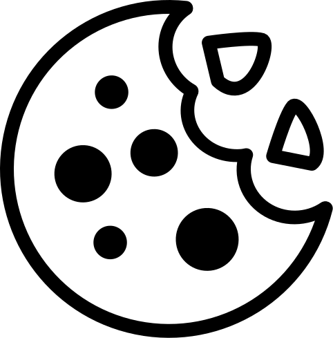

Open Redirect
Open Redirect is possible when a web application accepts untrusted input that could cause
the web application to redirect the request to a URL contained within untrusted input.
Quiz
(1) Can you escape from "Emergency Exit"?
(2) You are fish. Be lured brilliant forget security.
(3) Where is Adium? Find my best friend.
(4) Adium will hunt "Golden Cookie". Help him.
|
|
|
 |
 |
|
| Emergency Exit |
Adium Room |
Golden Cookie |
Cookie |
Eaten Cookie |
Phishing |